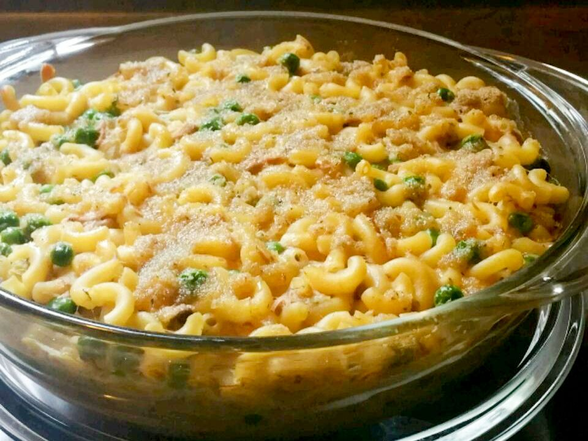

Home
Classic Tuna Noodle Casserole

Description
This classic tuna noodle casserole is tossed with pasta, peas, and pimentos in a creamy sauce, then baked until bubbling with a crunchy crumb topping.
Serve with your favorite frozen vegetable combination, followed by ice cream for dessert.
Ingredients
- 2 cups hot cooked medium egg noodles
- 2 (6 ounce) cans tuna, drained and flaked
- 1 (10.5 ounce) can Campbell's Condensed Cream of Celery Soup or Campbell's Condensed 98% Fat-Free Cream of Celery Soup
- 1 cup cooked peas
- ½ cup milk
- 2 tablespoons chopped pimentos (Optional)
- 2 tablespoons dry bread crumbs
- 1 tablespoon butter, melted
Steps
- Preheat the oven to 400 degrees F (205 degrees C).
- Mix together noodles, tuna, condensed soup, peas, milk, and pimentos in a 1 1/2-quart baking dish until well combined.
- Bake in the preheated oven for 20 minutes.
- Meanwhile, mix together bread crumbs and melted butter in a small bowl until combined.
- Sprinkle bread crumb mixture over the top of casserole. Continue baking until topping is golden brown, about 5 more minutes.
- Devour!